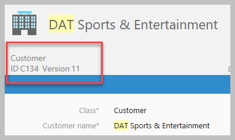

Common installation errors and resolutions¶
The following errors or issues may be experienced during the installation process
VaultConnectionTest fails¶
Unable to make a connection with error: Could not find procedure ‘dbo.spMFDecrypt’
This error arise when a upgrade or installation could not find the M-Files installation version or the procedure spMFUpdateAssemblies was executed without specifying the parameter but could not find the assembly folders.
The error will happen when the CLR procedures are missing. Inspecting the listing of procedures in SSMS explorer will show that the CLR procedures are missing. Listing with CLR procedures. The CLR procedures have a ‘lock’ icon as shown below.
Listing where CLR procedures are missing

Run the procedure spMFUpdateAssemblies with the parameter specifying the correct M-Files version
The results should not show any errors. If it still showing an error then refer to the section on trapping connection errors.
Unable to log into M-Files¶
Probable causes:
Corrupt / old connection remnant on server
Unable to connect to M-Files using the login credentials
Solution:
Check the error log (see screenshot)
Delete content of the c:_users_[loginuser]_AppData_MFSQL Vault Install folder
Alternatively one can delete the VaultSettings.xml file in the this folder
check the settings to log into the correct M-Files Server

Example of error
Watch the video
Unable to connect to vault¶
Probable causes:
The settings for connecting to the vault is incorrect or could not be installed
The server security settings does not allow powershell scripts
The M-Files password changed
Solution:
Update settings using spMFSettingsForVaultUpdate
Exec spMFSyncronizeMetadata produces an error / email¶
Probable causes:
The licensing is not valid / or has not been activated
Solution:
Install the license for MFSQL Connector and log into the vault using a desktop client

Network connection error on login to the vault for the first time¶
Probable causes:
The connection string is invalid
The SQL licensing has not taken place and the connector will not operate.
Solution:
search for ‘connectionstring’ in the vault and update the connection string.
Log out of vault
Uninstall the MFSQL Connector vault application in M-Files, reinstall, and relicense
Log back into vault
MFSQL Connector context menu error¶
Probable causes:
The connection string is invalid
Solution:
search for ‘connectionstring’ in the vault and update the connection string
log out and log back into vault.

EmailProfile Error¶
Probable causes:
When procedures are executed with an error the message appears
Note that this error also indicates that there was an error
Solution:
Install Database Mail and set the profile name to ‘MailProfile’
Check MFLog table for error messages

MFLog shows error for invalid license¶
Probable causes:
Indicates the license has an issue
Solution:
Check that license has been added to the vault application
Check Configurations / other applications / MFSQL Connector VaultApp Dashboard to see if it loading properly. If it iscorrect, then uninstall and manually re-install the vault application from the installation files.
No such interface supported¶
Sometimes after an upgrade errors appear with ‘No such interface supported’ in the error description. It is likely that the error will also refer to an older version of M-Files.
An example is below: A .NET Framework error occurred during execution of user-defined routine or aggregate “spMFCreatePublicSharedLinkInternal”: System.Runtime.InteropServices.COMException: No such interface supported. CoVaultObjectOperations.cpp, 2462, No such interface supported. (0x80004002) Helper.cpp, 745, No such interface supported. (0x80004002) (M-Files 21.1.9827.4) (0028) System.Runtime.InteropServices.COMException: at LSConnect.MFiles.MFilesAccess.GetPublicLink(Int32 ObjectID, Int32 pDay, Int32 pMonth, Int32 pYear) at MFilesWrapper.GetPublicSharedLink(String VaultSettings, String XML, String& OutputXml) .
Probable cause:
One of the applications that is using the M-Files API’s has loaded the previous version into memory. The upgrade will not automatically release these older versions. However, MFSQL Connector cannot find the previous version.
Solution:
Restart the SQL server service. If this does not resolve the issue, restart the SQL server.